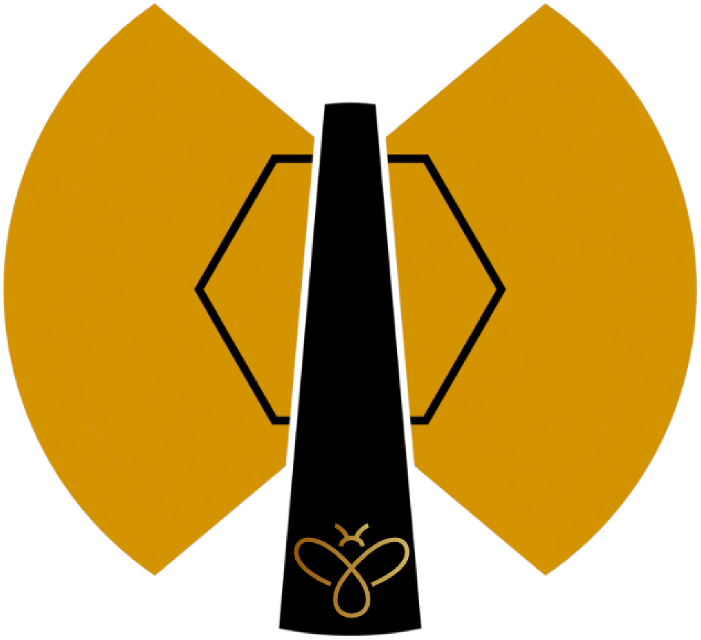

Physics simulation and analysis for FRC robot code. Version .
Runs the robot's own code in the loop with a deterministic physics engine, a rules-aware REBUILT field, scripted runs and calibration.
Built with Rapier (Apache-2.0), three.js (MIT) and uPlot (MIT). The BALTA name, wordmark and emblem belong to BALTA Robotics.


 Crucible
Crucible